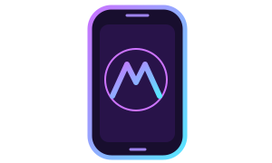
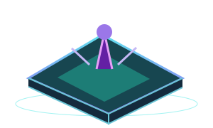

CONCEPTO VISUAL · NO CAPTURA
CONCEPTO VISUAL · NO CAPTURAPrototipo funcional · En desarrollo
OS Menkion
Exploramos una experiencia de escritorio tridimensional sobre Linux, Godot y Wayland, con interacción y múltiples pantallas.
Ver proyecto ↗Software experimental, interfaces alternativas y mundos por construir. Conoce qué está funcionando, qué sigue en desarrollo y qué todavía es una idea.
CONCEPTO VISUAL · NO CAPTURAExploramos una experiencia de escritorio tridimensional sobre Linux, Godot y Wayland, con interacción y múltiples pantallas.
Ver proyecto ↗
CONCEPTO VISUAL · NO CAPTURAInvestigamos una interfaz móvil experimental sin perder de vista la compatibilidad y la seguridad del ecosistema Android.
Ver proyecto ↗
CONCEPTO VISUAL · NO CAPTURAUn proyecto creativo de videojuego que explora inventarios tridimensionales, objetos interactivos y mundos por descubrir.
Ver proyecto ↗Los proyectos listados son iniciativas creativas en distintas etapas. No se anuncian descargas públicas, fechas de lanzamiento ni características terminadas que todavía no existen.